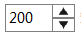

| 接口 | 说明 |
|---|---|
| ScreenShotPanel.OnCallback |
回调接口，开始和结束的事件通知
|
| TitleBarPanel.OnCallback |
回调接口：图标点击事件
|
| 类 | 说明 |
|---|---|
| IntTextField |
自定义输入框
特性说明： 1.只支持整数输入 2.组件右边有增加和减少图标，可通过点击进行值的增加和减少操作  |
| ScreenShotPanel |
屏幕录制面板
|
| TimingLabel |
计时器
|
| TitleBarPanel |
标题栏面板
|
| TitleLabel |
自定义标题组件
|